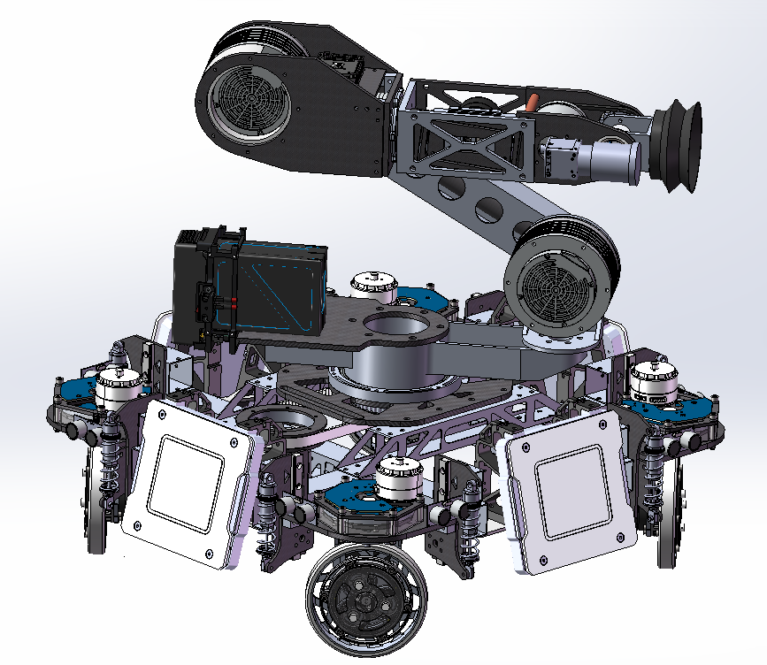
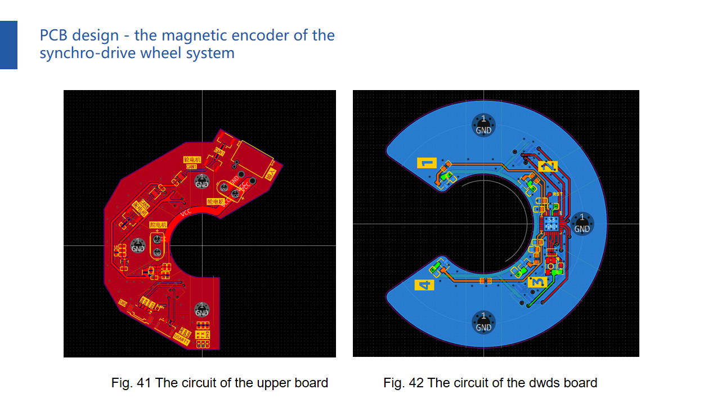
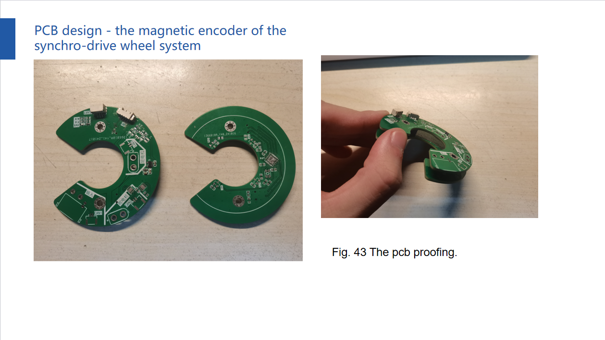

Synchro-drive robot with a 5-DoF robotic arm
Solo full-stack build of an omnidirectional mobile-manipulation platform, spanning mechanical, electronics, control, and perception.
- Designed the synchro-drive chassis and 5-DoF arm from CAD to hardware;
- Laid out a two-board encoder/power PCB;
- Implemented STM32 chassis kinematics with PID control and the arm's forward/inverse kinematics;
- Integrated YOLOv7 recognition, closing the loop from perception to motion.
Overview
A mobile manipulation robot built across all four disciplines: mechanical design, PCB design, control, and visual recognition. The chassis uses four synchro-drive wheel sets for omnidirectional movement, with a timing belt driving the first yaw axis of the gimbal. The arm has five degrees of freedom — yaw-pitch-pitch-roll-yaw — to operate in cluttered conditions.
Mechanical
The robot integrates the synchro-drive wheel-set and gearbox designs I developed for competition robots (detailed in the drivetrain deep dive) into a compact chassis, with a 5-DoF serial arm mounted on the gimbal.
Electronics
I designed a two-board PCB stack serving as magnetic encoder and power distribution for the wheel-set steering axis. The upper board steps the chassis bus voltage down for the M3508 drive and steering motors and forwards position data and CAN messages; the lower board carries the encoder chip and four Hall elements reading a magnet ring that rotates with the wheel's driving section.
Control & vision
- Derived the kinematic model of the omnidirectional chassis and implemented the control framework on a RoboMaster C board (STM32F407IGHx) using STM32CubeMX, with CAN communication and PID control loops.
- Implemented forward and inverse kinematics for positioning the 5-DoF arm.
- Deployed YOLOv7 for object recognition.
Media


